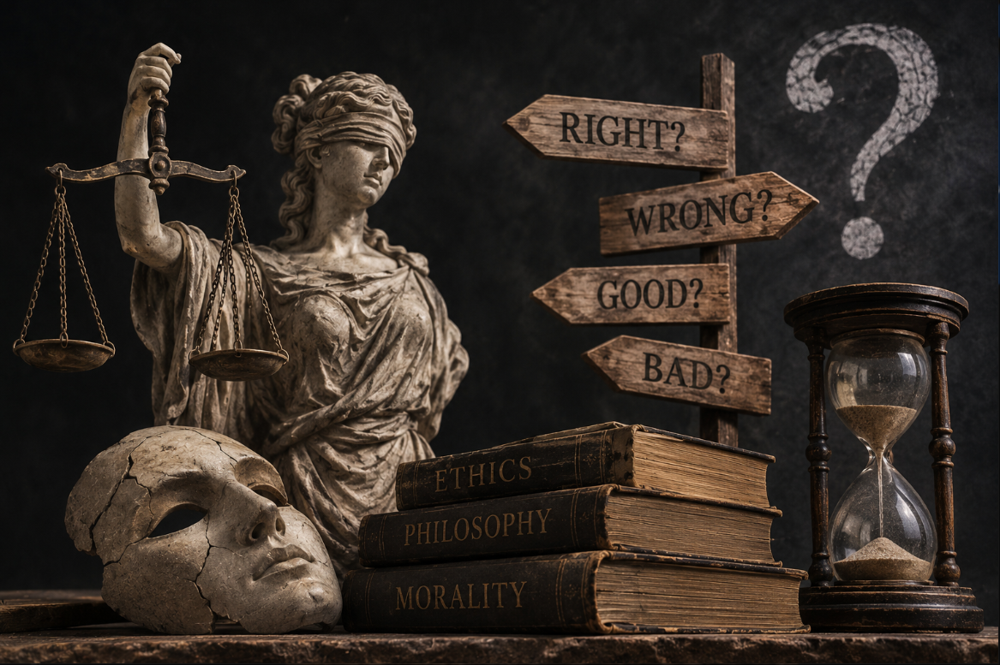

What Is Moral Nihilism?

Moral nihilism, also called ethical nihilism, is the metaethical view that nothing is objectively morally right or wrong, good or bad, required or forbidden. It is a claim about what morality is, not a first-order moral claim about which actions are wrong. A moral nihilist does not say that murder is permitted. The nihilist says that the property of being morally wrong, as ordinary moral thought conceives it, is not instantiated anywhere.[1][2]
The view is usually introduced through three connected questions in metaethics: whether moral statements aim to describe facts, whether any such facts exist, and what follows if they do not. Moral nihilists typically answer yes to the first and no to the second, which yields the error theory. Other philosophers deny the first answer and are classed as expressivists insteadA.[20] The important point is that moral nihilism does not simply tell us to stop using words such as “right” and “wrong.” It asks what, if anything, those words are actually referring to. When people call an action cruel, unjust, admirable, or blameworthy, they normally speak as though they are identifying something real about the action. Moral nihilism challenges that assumption. It asks whether there is really a moral property in the world that makes an action wrong, or whether the appearance of such a property comes from human attitudes, emotions, social practices, and ways of interpreting what we do.
This makes moral nihilism more radical than the simple idea that moral disagreement is common or that different societies have different values. A person can believe that cultures disagree about morality while still thinking that one of those cultures has the objectively correct answer. Moral nihilism goes further: it questions whether there is an objective moral answer to discover in the first place. If there are no objective moral facts, then saying that an act is morally wrong cannot be understood as reporting a fact that would remain true regardless of what anyone believed. People could still have strong moral convictions, create laws, condemn violence, praise generosity, or feel genuine anger toward cruelty. Those responses would remain psychologically and socially significant, but their significance would not come from an objective moral order existing independently of human beings. This is one reason moral nihilism can feel both intellectually simple and deeply unsettling: it does not merely ask which moral rules we should follow; it asks whether there are moral truths there to follow at all.
History of Moral Nihilism
Also read: Explore more history History of philosophy traces how thinkers and philosophical traditions have explored questions about reality, knowledge, morality, and human existence across different periods and cultures. Read article →
Doubts about whether morality is objective are ancient, but moral nihilism as a developed theory is largely a twentieth-century creation. Earlier thinkers raised challenges that later philosophers have drawn on, yet most of them stopped short of the claim that all positive moral judgments are false. Tracing the history therefore means separating real precursors from thinkers who merely asked related questions.[1] The history is therefore less a straight line from ancient skepticism to modern nihilism than a gradual change in the way philosophers understood moral authority. At different times, the central question shifted from whether customs were natural or conventional, to whether moral knowledge could be grounded in reason, and eventually to whether moral claims refer to any objective facts at all. These distinctions matter because a philosopher can challenge traditional morality without denying that objective moral truths exist.
Ancient Roots
Greek debates between nomos (convention) and physis (nature) put pressure on the idea that moral rules are part of the natural order. Plato presents characters such as Thrasymachus, who says justice is whatever benefits the stronger, and Callicles, who treats moral conventions as devices of the weak, though how far these characters reflect the actual views of the historical sophists is debated.[7] These debates are important because they separate two questions that are often confused: whether people happen to accept a moral rule and whether that rule has a deeper justification. If morality is merely a convention, then its authority might come from human agreement rather than from nature or an independent moral order. That possibility does not itself establish nihilism, but it creates an early version of the problem that later philosophers would make much more explicit.
Plato's own response was not nihilistic. In works such as the Republic, he sought to defend justice as something more than a social convention and treated the question of whether justice is genuinely good as a philosophical problem with an objective answer. This makes the ancient Greek debate especially useful for understanding the later history: the challenge to objective morality was already visible, but so was the attempt to answer that challenge by grounding morality in something more fundamental than custom. The disagreement was not simply about which rules society should follow; it was about where moral authority comes from in the first place.
Later, the Pyrrhonian skeptic Sextus Empiricus argued in Against the Ethicists that nothing is good or bad by nature, while recommending suspension of judgment rather than asserting a positive nihilist thesis.[6] This distinction is important. Sextus did not simply replace morality with the doctrine that nothing is morally real. His skeptical method instead challenged the philosopher's ability to establish such claims with certainty. Ancient skepticism therefore provides an important precursor to later moral anti-realism, but it should not be described as though the ancient skeptics had already formulated modern moral nihilism.
Hume and Nietzsche
David Hume argued that moral distinctions are not derived from reason alone and are tied to human sentiment, a view often linked to the "is-ought" gap. He is not usually counted as a moral nihilist, but his arguments about reason and motivation became ingredients in later discussions.[8] Hume's importance lies partly in the way he changed the question. Rather than assuming that moral judgment follows directly from reason or from facts about the world, he examined the role of human sentiment in producing approval and disapproval. This opened a lasting debate over whether moral judgments describe something independent of human psychology or instead depend in an essential way on how human beings respond to things.
Hume's position should nevertheless be kept distinct from moral nihilism. To say that moral distinctions arise from human sentiment is not necessarily to say that morality is meaningless, false, or without practical force. His account can be read as an attempt to explain how moral evaluation works once human nature, feeling, and social life are taken seriously. Later philosophers could push the anti-realist implications further, but Hume himself did not simply declare that all moral judgments were mistaken. His work is therefore better understood as part of the intellectual background from which modern debates about moral objectivity developed.
Nietzsche's genealogical critique of morality, especially in On the Genealogy of Morality, questioned the origins and value of moral values. Some scholars read him as an anti-realist about moral value, though interpretations varyB.[9][10] Nietzsche's significance for the history of nihilism is broader than a simple rejection of morality. He examined how moral values arise from particular historical conditions, forms of power, psychological needs, and struggles between different ways of life. If values have a history rather than descending from an eternal moral order, then their authority becomes a question that requires explanation rather than an assumption that can be taken for granted.
At the same time, Nietzsche should not be reduced to the slogan that "nothing is right or wrong." His project was deeply concerned with the creation, transformation, and evaluation of values. His critique of inherited morality was intended to open a problem, not simply to close the discussion by declaring every value equally empty. For the later history of nihilism, however, his work was crucial because it brought the possibility of a crisis in inherited values into much sharper focus. The question was no longer only whether particular moral rules could be justified, but whether the traditional foundations of value themselves could survive critical examination.
Twentieth-Century Developments
In the 1930s, A. J. Ayer's emotivism claimed that moral statements express emotions rather than describe facts, a non-cognitivist alternative to nihilism.[11] The rise of logical positivism and the broader emphasis on meaningful language helped move the debate toward a more precise question: what kind of statement is a moral judgment? If saying "murder is wrong" does not function like saying "water boils at a particular temperature," then philosophers need to explain what moral language is doing instead. Ayer's answer was that moral utterances primarily express approval, disapproval, or other attitudes rather than report objective moral properties.
This was an important development, but emotivism should not be confused with moral nihilism. An emotivist can reject objective moral facts while still giving moral language a meaningful role in human communication and practical life. The distinction illustrates an important division within twentieth-century moral philosophy: some philosophers rejected objective moral facts by changing their account of what moral language means, while others argued that ordinary moral claims genuinely purport to describe objective facts and are therefore systematically mistaken if no such facts exist.
J. L. Mackie gave the error theory its classic statement in his 1946 paper "A Refutation of Morals" and in his 1977 book Ethics: Inventing Right and Wrong.[12][2] Mackie's position became one of the clearest modern formulations of the idea that ordinary moral discourse aims to describe objective values, even though no such values exist. His famous "argument from queerness" challenged the idea that there could be objective moral properties with the kind of intrinsic authority that moral realism requires. His work therefore helped distinguish error theory from non-cognitivist approaches such as emotivism: the error theorist does not simply say that moral sentences are disguised expressions of feeling, but that ordinary moral claims make commitments that the world cannot satisfy.
Since then, Richard Garner has defended abolitionism, Richard Joyce has developed fictionalism, and Jonas Olson and Bart Streumer have produced book-length defences of the error theory.[13][3][4][5] Their work shows that contemporary moral nihilism is not a single, uniform doctrine. Some philosophers have asked whether moral language should be abandoned altogether, while others have explored whether people could continue to use moral language while treating it as a useful fiction rather than a description of objective reality. Others have focused more narrowly on whether the commitments of ordinary moral thought can be consistently maintained if objective moral facts do not exist. The modern debate has therefore moved beyond the simple question of whether morality is "real" and toward more precise questions about truth, language, rationality, motivation, and what a moral practice would look like after objective moral facts are rejected.
The modern history of moral nihilism is consequently best understood as a convergence of several philosophical debates rather than the sudden appearance of a single doctrine. Ancient skepticism questioned whether values belong to nature, Hume emphasized the role of sentiment, Nietzsche challenged the historical authority of inherited values, and twentieth- century philosophers developed increasingly precise theories about moral language and moral facts. These traditions do not all lead to nihilism, but together they help explain why the question became so difficult to avoid: if moral values are not discovered in an objective order of reality, what exactly are we doing when we make moral judgments?
Timeline of Moral Nihilism: Key Dates and Events
Greek debates about convention versus nature, reflected in Plato's portraits of Thrasymachus and Callicles, challenge the idea that morality is part of nature.[7]
Sextus Empiricus argues in Against the Ethicists that nothing is good or bad by nature.[6]
Hume's Treatise of Human Nature argues that moral distinctions are not derived from reason alone.[8]
Nietzsche publishes On the Genealogy of Morality, a critical inquiry into the origin and value of moral values.[9]
A. J. Ayer's Language, Truth and Logic popularizes emotivism, the claim that moral statements express attitudes rather than state facts.[11]
J. L. Mackie publishes "A Refutation of Morals," an early statement of the error theory.[12]
Mackie's Ethics: Inventing Right and Wrong presents the arguments from relativity and queerness and becomes the classic text of the error theory.[2]
Richard Garner's Beyond Morality defends abolitionism, the proposal to abandon moral discourse.[13]
Richard Joyce publishes The Myth of Morality, defending the error theory together with revolutionary fictionalism.[3]
Joyce's The Evolution of Morality and Sharon Street's "A Darwinian Dilemma for Realist Theories of Value" bring evolutionary debunking arguments to the center of metaethics.[14][15]
Jonas Olson publishes Moral Error Theory: History, Critique, Defence, a detailed survey and defence.[4]
Bart Streumer's Unbelievable Errors extends the error theory to all irreducibly normative judgments.[5]
Major Thinkers Associated with Moral Nihilism
Also read: Explore more thinkers Philosophical thinkers are the individuals whose ideas have shaped the study of reality, knowledge, ethics, politics, and human existence across different cultures and periods. Read article →
Only a few of these thinkers defend moral nihilism outright. Most of the historical figures are included because they raised doubts or supplied arguments that later error theorists used, so the table separates real defenders from important precursors and neighbouring views.[1]
| Thinker | Period | Connection to Moral Nihilism |
|---|---|---|
| Sextus Empiricus | c. 2nd–3rd century CE | Pyrrhonian skeptic who argued that nothing is good or bad by nature, while recommending suspension of judgment rather than a nihilist thesis.[6] |
| David Hume | 1711–1776 | Argued that morality is tied to sentiment rather than reason alone; an influential precursor, though not a nihilist.[8] |
| Friedrich Nietzsche | 1844–1900 | Subjected morality to a genealogical critique; sometimes read as an anti-realist about value, though this is disputed.[9][10] |
| A. J. Ayer | 1910–1989 | Defended emotivism, a non-cognitivist alternative holding that moral statements express attitudes.[11] |
| J. L. Mackie | 1917–1981 | Gave the error theory its classic statement through the arguments from relativity and queerness.[2] |
| Richard Garner | Contemporary | Defended moral abolitionism, the view that moral discourse should be abandoned.[13] |
| Richard Joyce | Contemporary | Defends the error theory together with revolutionary fictionalism and evolutionary debunking arguments.[3][14] |
| Jonas Olson | Contemporary | Author of a major defence of the error theory and survey of the debate.[4] |
| Bart Streumer | Contemporary | Argues that the error theory applies to all irreducibly normative judgments, while holding that this conclusion cannot be fully believed.[5] |
Forms of Moral Nihilism
Also read: Explore ethics Ethics is the branch of philosophy concerned with questions of right and wrong, good and evil, virtue, duty, and how we ought to live and act. Read article →
Moral nihilism is not a single doctrine. Philosophers distinguish the core theoretical claim, usually the error theory, from several views about what people should do once they accept it. The same thesis about morality can therefore sit alongside very different practical attitudes.[1]
The Error Theory
The error theory has two parts. The first is semantic: ordinary moral judgments are claims about how things are, and they commit speakers to objective, authoritative, action-guiding requirements. The second is metaphysical: nothing in the world has those features. If both parts are right, positive moral judgments such as "cruelty is wrong" are systematically false, in the way that statements about witches would be false if there are no witches.[2] Mackie presented this as a second-order view about the nature of morality, not a moral position, and he went on to propose a first-order ethics of his ownC.[4]
The basic idea is easier to see through an ordinary moral statement such as "lying is wrong." Most people understand this as more than a report about personal dislike or social convention; it presents wrongness as a reason that should apply to anyone in the relevant circumstances. The error theorist argues that this appearance is misleading. We may continue to feel that some actions are cruel or admirable, but those reactions do not correspond to objective moral properties existing independently of human attitudes. The result is a striking conclusion: ordinary moral thinking tries to describe a kind of fact that, according to the error theorist, does not exist.
Moral Fictionalism
Moral fictionalism asks what error theorists should do with moral discourse. Richard Joyce defends revolutionary fictionalism: the proposal that people should keep using moral language as a useful fiction, without believing its claims, because the practice helps to stabilize cooperation and resist temptation. On this view the language survives while the belief goes.[3] Critics ask whether people can sincerely engage in a fiction they know to be false, and whether the practice would collapse once its fictional status became widely known.
Fictionalism therefore tries to separate the usefulness of moral language from the truth of the beliefs normally expressed through it. A person might speak about duties, rights, or wrongdoing because doing so encourages cooperation and helps people coordinate their behaviour, while privately rejecting the existence of objective moral facts. The attraction of this view is that it does not require society to abandon moral vocabulary immediately. Its difficulty is explaining whether a practice can retain its motivational force once people know that its central claims are being treated as fiction rather than truth.
Amoralism, Skepticism, and Abolitionism
Several neighbouring terms are used loosely. An amoralist is usually a person who is not motivated by moral considerations, which is different from a moral nihilist, who holds a theory about moralityD. Moral skepticism, in the strict sense, concerns whether moral knowledge or justified moral belief is possible, which is a different question from whether moral claims are true.[20] Abolitionism, defended by Richard Garner, goes further and holds that people would be better off abandoning moral discourse, whereas conservationists would keep it. Olson surveys these options in his defence of the error theory.[13][4]
These distinctions matter because rejecting objective morality does not automatically produce one particular way of living. Someone might accept the error theory while continuing to care deeply about other people, another person might see moral language as a useful fiction, and an abolitionist might argue that the language itself should eventually be discarded. Likewise, a moral skeptic can remain open to the possibility that objective moral truths exist while simply denying that we can know them. Moral nihilism therefore describes a family of positions whose members can agree about the absence of objective moral facts while disagreeing sharply about what should happen to moral language and practice afterward.
Arguments for Moral Nihilism
The case for moral nihilism rests on a small number of arguments. Most of them aim to show that objective moral facts are either metaphysically strange, unnecessary for explaining moral belief, or hard to square with how moral beliefs actually arise.[2] These arguments do not all make exactly the same claim. Some question what objective values would have to be like if they existed, while others ask whether our moral beliefs have the kind of origin or justification we would expect if they were genuinely tracking independent truths.
The Argument from Queerness
Mackie argued that if objective values existed, they would be entities or properties of a very strange sort, unlike anything else in the universe. They would also have an authority built into them: merely recognizing that something is wrong would give anyone a reason to avoid it, whatever their desires. Mackie further pointed out that we would need some special faculty of moral perception or intuition to know such facts. He concluded that it is more plausible to deny that such values exist than to accept so strange a package.[2]
The force of the argument becomes clearer when we compare moral facts with ordinary facts. We can explain how people discover physical objects, mathematical relationships, or historical events without assuming a mysterious property that automatically gives us a reason to act. Objective moral facts, Mackie argued, would be different: they would somehow contain both a value and a reason for action simply by existing. The question is whether we have any good explanation for how such facts could fit into our picture of reality. If we do not, Mackie thinks the simpler explanation is that the objective values were never there to begin with.
The Argument from Relativity
Mackie's second argument starts from the variation in moral codes across societies and periods. He suggested that this variation is better explained by differing ways of life than by differing perceptions of objective moral truth. Critics reply that disagreement alone does not show that there are no moral truths, since people disagree about history and science too. The argument is therefore stronger when combined with queerness than when taken alone.[2][1]
The deeper point is not simply that people disagree about what is right and wrong. It is that moral beliefs often appear closely connected to the forms of life in which people are raised: their customs, institutions, religious traditions, social expectations, and material circumstances. If these factors can explain why different communities develop very different moral outlooks, then there may be less reason to think that those outlooks are reliably tracking a single objective moral reality. Still, disagreement by itself cannot settle the issue. People can disagree about a real fact, so the argument needs a further explanation of why moral disagreement is especially significant.
Evolutionary Debunking Arguments
Evolutionary debunking arguments are a more recent addition. Richard Joyce argues that moral beliefs can be explained by natural selection, which favoured creatures disposed to cooperate, without assuming that those beliefs track moral truths, and he takes this to undermine their justification.[14] Sharon Street develops a related "Darwinian dilemma" aimed at realist theories of value: realists must either deny that evolutionary forces influenced our moral beliefs or accept that it would be a coincidence if those beliefs matched independent moral facts. Street's target is realism, and not every philosopher who uses her argument concludes that nihilism is true.[15]
The basic thought is surprisingly simple: evolution can explain why human beings developed certain moral tendencies without needing morality itself to be objectively true. Traits such as cooperation, loyalty, care for offspring, and sensitivity to cheating can have obvious survival and social advantages. If our moral instincts were shaped largely because they helped our ancestors survive and reproduce, then the fact that we strongly feel that something is wrong does not, by itself, show that it really is wrong in an objective sense. The challenge for moral realists is therefore to explain why evolutionary history should have produced beliefs that accurately correspond to independent moral facts. The challenge does not automatically prove nihilism, but it puts pressure on the assumption that our moral intuitions are reliable guides to objective value.
Criticisms of Moral Nihilism
Critics of moral nihilism include moral realists, expressivists, and philosophers who accept that moral claims are false but doubt that the arguments establish it. The strongest objections target the premises of the arguments, not the conclusion's emotional appeal.[1] The debate therefore is not simply about whether nihilism sounds disturbing or attractive. It is about whether the reasons given for rejecting objective morality are actually strong enough to justify such a radical conclusion.
Companions in Guilt
The companions in guilt objection says that the arguments against moral facts also threaten epistemic norms, such as the claim that we have reason to believe what the evidence supports. If moral facts are metaphysically "queer," so are epistemic reasons, and then the arguments for nihilism would undermine themselves. Terence Cuneo develops a version of this objection. Bart Streumer accepts the consequence that the error theory covers all irreducibly normative judgments, but argues that people cannot fully believe it.[18][5]
The underlying challenge is one of consistency. When someone argues that there are no objective reasons for action, the argument itself appears to rely on reasons for accepting one belief rather than another. If the same kind of reasoning used to reject moral facts also removes our grounds for trusting evidence, logic, or rational belief, the result may be too powerful: it would threaten much more than morality. Moral nihilists can respond by drawing a distinction between moral reasons and other kinds of normativity, but doing so requires explaining why one kind of reason should be rejected while another remains legitimate.
The Moorean Response and Moral Experience
A second objection is Moorean in spirit: we are more certain that some acts, such as torturing someone for fun, are wrong than we are of any philosophical premise that implies otherwise. Moral realists also appeal to moral experience, which seems to present moral demands as real features of situations and not as projections of our attitudes. Error theorists reply that the appearance of objectivity is exactly what they set out to explain.[19]
This objection asks whether a philosophical theory should really make us give up judgments that seem deeply secure. When a person encounters deliberate cruelty, the experience usually feels like recognition of something wrong, not merely the discovery of a personal dislike. A realist can take this experience as evidence that moral facts are part of reality. The nihilist can instead argue that humans are naturally disposed to experience certain actions as objectively wrong, even if that experience does not correspond to an independent moral fact. The disagreement therefore reaches beyond abstract metaphysics and into the question of whether moral experience should count as evidence for moral realism.
Practical Consequences
Many people worry that if morality is an error, then responsibility, trust, and cooperation would collapse. Error theorists respond that a theory about the status of moral claims does not remove the reasons people have to care for others, that most people's moral behaviour is supported by emotions and social institutions, and that moral realists do not behave better on average. How to proceed after accepting the theory remains open, which is why fictionalism, abolitionism, and conservationism are all defended.[1][3]
The practical question is therefore more complicated than simply asking whether people would become selfish if objective morality disappeared. People have many motives besides moral obligation: affection, empathy, loyalty, reputation, self-interest, social expectations, and concern for the consequences of their actions. A person could reject objective moral facts and still strongly oppose cruelty or value honesty because of these other reasons. The real difficulty is whether such motivations can replace the distinctive authority traditionally attributed to moral obligations. Moral nihilism may remove one foundation for morality without removing every reason people have to live cooperatively with one another.
Influence and Everyday Usage
On Contemporary Metaethics
The error theory is now a standard position in metaethics. It serves as a benchmark against which realist, constructivist, and expressivist theories are tested, and recent work has extended it from moral claims to normative claims in general. Much of the contemporary debate is conducted in the framework set out by Mackie and developed by Joyce, Olson, and Streumer.[4][5] Its importance is therefore not limited to philosophers who accept the theory. Even philosophers who reject moral nihilism often have to explain why objective moral facts exist, how we could know them, and what makes them genuinely authoritative. In that sense, nihilism functions as a pressure test for theories of morality: any successful account of objective value must explain why the nihilist's doubts do not succeed.
On Debates About Religion and Morality
The idea that "without God, everything is permitted" is often attributed to Dostoevsky's characters and is a common way moral nihilism enters public debate. Philosophers have long questioned the link: Plato's Euthyphro asks whether something is good because the gods approve of it or whether they approve of it because it is good, and many theists and atheists alike defend objective morality without relying on divine commands. Moral nihilism does not require atheism, and atheism does not require moral nihilism.[7] The distinction matters because the existence of God and the existence of objective moral facts are separate philosophical questions. A person may believe that morality ultimately depends on God, while another may believe that objective moral truths exist independently of religion; neither view automatically settles the question of moral nihilism.
On Existential and Modern Thought
Moral nihilism has also influenced wider discussions about meaning, value, freedom, and the possibility of living without inherited moral foundations. Its influence is especially visible in modern philosophy, where the decline of traditional sources of authority raised questions about how people can create or choose values when no universally accepted moral order is available. Existentialist thinkers responded to this problem in different ways rather than simply accepting nihilism: some emphasized individual responsibility, others the creation of values, and others the need to live authentically in the face of uncertainty. Moral nihilism therefore became less important as a doctrine that everyone should accept than as a challenge that later philosophies had to answer.
In Daily Language
In everyday speech, "nihilist" is often used for someone who does not care about right and wrong, or who behaves immorally. That usage blurs several distinctions. A moral nihilist is a person who holds a theory about the nature of morality, which is compatible with kindness, honesty, and strong personal commitments. An immoral person is someone who acts badly, which may or may not involve any theory at all. For the wider range of meanings, see the main nihilism article.[1] In ordinary conversation, calling someone a "nihilist" therefore often says more about their perceived attitude than about their philosophical position. A person who seems cynical, indifferent, or destructive may be described as nihilistic even when they have never considered the metaethical question of whether objective moral facts exist.
In Literature and Popular Culture
Nihilism has also become a recurring theme in literature, film, and popular culture, where it is often used to explore what happens when traditional sources of meaning or value lose their authority. Characters described as nihilists may reject moral conventions, search for meaning in an apparently indifferent world, or respond to the absence of objective value with rebellion, detachment, or despair. These portrayals can be philosophically suggestive, but they should not automatically be treated as examples of moral nihilism in the strict metaethical sense. Popular culture often uses "nihilism" more broadly to describe a mood or outlook than a carefully argued theory about moral facts.
Frequently Asked Questions About Moral Nihilism
What is moral nihilism?
Moral nihilism, also called ethical nihilism, is the metaethical view that there are no objective moral facts, so that nothing is objectively morally right or wrong. It is a claim about the status of morality, not a recommendation to behave badly.
What is the error theory?
The error theory is the best-known form of moral nihilism. It holds that ordinary moral judgments try to describe objective moral facts, but because no such facts exist, positive moral judgments are systematically false. J. L. Mackie gave it its classic statement in 1977.
Who defended moral nihilism?
J. L. Mackie is the key figure, with his 1946 paper and 1977 book. Richard Joyce, Richard Garner, Jonas Olson, and Bart Streumer have developed and defended related views, while earlier thinkers such as Sextus Empiricus and Hume raised doubts that are often discussed alongside them.
Is moral nihilism the same as moral relativism?
No. Moral relativism holds that moral claims can be true or false relative to a culture or individual, while moral nihilism denies that there are objective moral facts that would make positive moral claims true.
Does moral nihilism mean anything goes?
Not necessarily. Moral nihilism is a theory about what morality is, not a moral claim that actions are permitted. A moral nihilist can still care about other people, obey laws, and hold personal commitments, and different nihilists disagree about what should replace morality.
What is moral fictionalism?
Moral fictionalism is a response to the error theory. It proposes that people can keep using moral language as a useful fiction, without believing that its claims are literally true. Richard Joyce defends a version called revolutionary fictionalism.
What are the main arguments for moral nihilism?
The classic arguments are Mackie's argument from queerness, which says objective moral properties would be metaphysically and epistemologically strange, and his argument from relativity, which points to the variation in moral codes. Evolutionary debunking arguments are a more recent addition.
Notes
-
Terms such as "moral nihilism," "error theory," "amoralism," and "moral skepticism" are used inconsistently. Moral skepticism usually concerns knowledge or justification, while the error theory concerns truth. It is best to state which claim is meant. ↩
-
Whether Nietzsche is a moral anti-realist, an error theorist, or a defender of a revised set of values is disputed among scholars. His critique of morality is not the same as the thesis that all moral claims are false. ↩
-
Error theorists differ on what follows from the theory. Mackie himself proposed a first-order morality grounded in human concern for others, while fictionalists, abolitionists, and conservationists propose other responses. ↩
-
The word "amoralist" is used for a person who is indifferent to moral considerations and, in some philosophical discussions, for an imagined figure who accepts that an act is wrong but is unmoved. Neither use is the same as holding the error theory. ↩
-
Philosophers classify expressivism differently. Some count it as a form of anti-realism, others as a rival to the error theory, and quasi-realists such as Simon Blackburn aim to earn much of the ordinary language of moral truth without positing moral facts. ↩
Citations
-
Sinnott-Armstrong, W. "Moral Skepticism." Stanford Encyclopedia of Philosophy. plato.stanford.edu/entries/skepticism-moral ↩
-
Mackie, J. L. Ethics: Inventing Right and Wrong. Harmondsworth: Penguin, 1977. ↩
-
Joyce, R. The Myth of Morality. Cambridge: Cambridge University Press, 2001. ↩
-
Olson, J. Moral Error Theory: History, Critique, Defence. Oxford: Oxford University Press, 2014. ↩
-
Streumer, B. Unbelievable Errors: An Error Theory About All Normative Judgements. Oxford: Oxford University Press, 2017. ↩
-
Sextus Empiricus. Against the Ethicists, trans. R. Bett. Oxford: Clarendon Press, 1997. ↩
-
Plato. Republic (Book I), Gorgias, and Euthyphro. ↩
-
Hume, D. A Treatise of Human Nature, 1739–1740 (Book III). ↩
-
Nietzsche, F. On the Genealogy of Morals, trans. W. Kaufmann and R. J. Hollingdale. New York: Vintage, 1967. ↩
-
Leiter, B. Nietzsche on Morality. London: Routledge, 2002. ↩
-
Ayer, A. J. Language, Truth and Logic. London: Gollancz, 1936. ↩
-
Mackie, J. L. "A Refutation of Morals." Australasian Journal of Psychology and Philosophy 24 (1946): 77–90. ↩
-
Garner, R. Beyond Morality. Philadelphia: Temple University Press, 1994. ↩
-
Joyce, R. The Evolution of Morality. Cambridge, MA: MIT Press, 2006. ↩
-
Street, S. "A Darwinian Dilemma for Realist Theories of Value." Philosophical Studies 127 (2006): 109–166. ↩
-
Harman, G. "Moral Relativism Defended." Philosophical Review 84 (1975): 3–22. ↩
-
Blackburn, S. Ruling Passions. Oxford: Oxford University Press, 1998. ↩
-
Cuneo, T. The Normative Web: An Argument for Moral Realism. Oxford: Oxford University Press, 2007. ↩
-
Shafer-Landau, R. Moral Realism: A Defence. Oxford: Oxford University Press, 2003. ↩
-
Sinnott-Armstrong, W. Moral Skepticisms. Oxford: Oxford University Press, 2006. ↩
Bibliography
Primary Texts
-
Ayer, A. J. Language, Truth and Logic. London: Gollancz, 1936.
-
Garner, R. Beyond Morality. Philadelphia: Temple University Press, 1994.
-
Joyce, R. The Myth of Morality. Cambridge: Cambridge University Press, 2001.
-
Mackie, J. L. Ethics: Inventing Right and Wrong. Harmondsworth: Penguin, 1977.
-
Nietzsche, F. On the Genealogy of Morals, trans. W. Kaufmann and R. J. Hollingdale. New York: Vintage, 1967.
-
Sextus Empiricus. Against the Ethicists, trans. R. Bett. Oxford: Clarendon Press, 1997.
Reference Works
-
Sinnott-Armstrong, W. "Moral Skepticism." Stanford Encyclopedia of Philosophy.
-
Pratt, A. "Nihilism." Internet Encyclopedia of Philosophy.
Introductions and Surveys
-
Olson, J. Moral Error Theory: History, Critique, Defence. Oxford: Oxford University Press, 2014.
-
Sinnott-Armstrong, W. Moral Skepticisms. Oxford: Oxford University Press, 2006.
Academic Tools
Other Internet Resources
-
Sinnott-Armstrong, Walter. “Moral Skepticism.” Stanford Encyclopedia of Philosophy.
-
Pratt, Alan. “Nihilism.” Internet Encyclopedia of Philosophy.
-
“Moral nihilism.” Wikipedia.
Further Reading
-
Joyce, R. The Evolution of Morality. Cambridge, MA: MIT Press, 2006.
-
Olson, J. Moral Error Theory: History, Critique, Defence. Oxford: Oxford University Press, 2014.
-
Streumer, B. Unbelievable Errors. Oxford: Oxford University Press, 2017.
-
Cuneo, T. The Normative Web. Oxford: Oxford University Press, 2007.
-
Street, S. “A Darwinian Dilemma for Realist Theories of Value.” Philosophical Studies 127 (2006): 109–166.